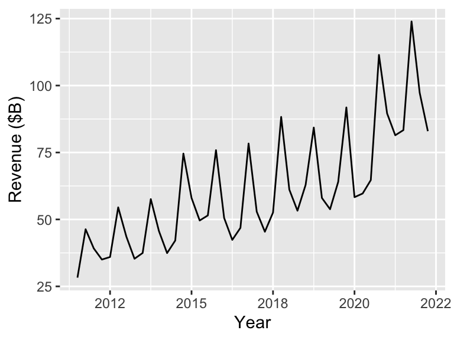
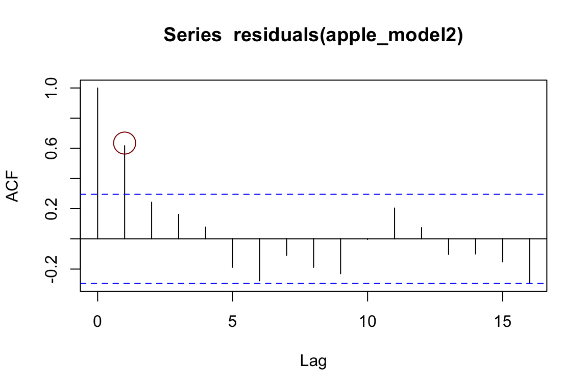

Period Time Year Quarter Revenue
1 1 2011.50 2011 Q3 28.27
2 2 2011.75 2011 Q4 46.33
3 3 2012.00 2012 Q1 39.19
4 4 2012.25 2012 Q2 35.02
5 5 2012.50 2012 Q3 35.97
6 6 2012.75 2012 Q4 54.51Data Science for Business Applications
Class 01 - Linear Regression
Introduction
Course Goals
- Use regression to build predictive models
- Understand the benefits and limitations of the models we build
- Given a new business situation, select an appropriate model, build it, measure its effectiveness, and effectively communicate the results
- This is a practical course!
Why Does This Course Exist?
- Why bother learning this stuff when we can get ChatGPT to do data analysis for us?
- AI (and computing in general) is only useful when you have the expertise to be able to recognize the correctness (or not) of its output
- In this class, you’ll develop that expertise!
About the Course Staff
- Instructor: Henrique Bolfarine, Ph.D.
- Office hours: Mondays 1:00 PM - 2:00 PM (GSB 3.140 A)
- Email: henrique.bolfarine@austin.utexas.edu
- Course Assistants:
- Lead Course Assistant (CA): Ezgi Durakoglugil
- Office hours: Many TA/CA office hours every week (both in person and on Zoom) - This should be your first option!
- You can ask any of the TAs/CAs about course content, but go to Ezgi for questions about logistics
Course logistics
Course Structure
- Units
- Unit A: Fundamentals of regression modeling
- Unit B: Applications and extensions
- Canvas
Make sure you can log in and are enrolled in STA 235 in Canvas
Check out the home page for the weekly schedule and to meet the course staff
Statistical Computing
- We will use R and RStudio for statistical analysis throughout the course
- Make sure both are installed on your laptop and bring it to every class
- If you aren’t comfortable with R/RStudio from STA 301, don’t worry!
Weekly Cadence for a Particular Topic
- Due by the start of class on Monday/Tuesday: Perusall pre-class video/reading discussion covering the topic
- During class on Monday/Tuesday: Lecture, activities, practice topic
- Due by 11:59 PM the following Sunday/Monday: Homework covering the topic
- The following Thursday at the beginning of class: Checkpoint Quiz on that topic
Pre-Class Work
- This is a fast-paced course, so it’s essential that you think about the material before class.
- We will use Perusall for pre-class video and reading assignments.
- Use Perusall to ask your classmates questions, and share your knowledge, thoughts, and opinions.
- This helps you better understand the material and will help me gear class time to what topics you are having the most trouble with.
Pre-Class Work
- Pre-class assignments (typically videos) are due at the start of each class.
- Aim to chime in with at least a few thoughtful questions, responses, or comments for each reading assignment.
- Grading is based on effort and thoughtfulness of your questions and comments and your engagement with classmates and the text.
- Each assignment is scored 0-3, but with a reasonable effort you will get a 3 on each one (so don’t worry about your grade).
Homework
- Why homework?
- Homework is due each week at 11:59 PM the night before class and submitted through Canvas.
- Automatically graded; resubmit as many times as you want!
- OK to work together, but try the problems on your own first for maximum benefit.

Checkpoint Quizzes
- It is critical in this course to stay on top of things and not fall behind.
- Checkpoint Quiz at the start of each class will help you ensure that you are really learning the material and give you an early heads-up if you aren’t.
- We’ll drop your lowest quiz score from each unit (A and B).
- You’ll have access to RStudio and a “cheat sheet” during quizzes (don’t spend time memorizing anything!).
Mastery Exams
- Each unit concludes with a Mastery Exam:
- Unit A: October 9 or 10 at 7 PM
- Unit B: University-assigned final exam period
- You’ll have access to RStudio and a “cheat sheet” during exams (don’t spend time memorizing anything!).
Assessment Grading
- Unit A has 7 Checkpoint Quizzes and Unit B has 6.
- For each unit, we will replace your lowest quiz score with your exam score for that unit (if that helps your overall grade).
Grading
| Component | Points |
|---|---|
| Pre-class work (Perusall) | 44 |
| Class Participation | 56 |
| Homework (13) | 195 |
| Checkpoint Quizze (13) | 325 |
| Exam A | 190 |
| Exam B | 190 |
| Total | 1,000 |
Getting Help
- My office hours: Schedule on Canvas.
- TA/CA office hours: Schedule on Canvas.
- Post questions in videos in Perusall (for questions about the course material).
- Post questions in group chats in Perusall (for general questions about the course, or homework questions).
- Weekly optional TA/CA-led review session (TBD).
Let’s do some statistics
- What personal characteristics about an instructor do you think are predictive of the scores they receive on student evaluations?

Hamermesh & Parker (2005) Data Set
- Student evaluations of \(N=463\) instructors at UT Austin, 2000-2002
- For each instructor:
- \(\texttt{eval}\): average student evaluation of teacher
- \(\texttt{beauty}\): average beauty score from a six-student panel
- \(\texttt{gender}\): male or female
- \(\texttt{credits}\): single- or multi-credit course
- \(\texttt{age}\): age of instructor
- (and more…)
Explore the data: \(\texttt{eval}\)

Explore the data: \(\texttt{beauty}\)

More time series datasets
What are some common characteristics of these time series? How do they differ?
Components of time series
We can think about a time series as having one or more components, or sources of variability:
- Trend+cyclic: Persistent, (usually) slow-moving long-run patterns
- Long run, Apple’s earnings go up over time
- Seasonal: Regular up-and-down movement around long-run trends
- Apple’s earnings vary predictably each quarter around the long-run trend
- Random or unpredictable variation
- Customers are fickle creatures, so earnings aren’t perfectly predictable
- External factors, like shocks that interrupt or change previous dynamics
- Introductions of the iPhone, supply chain shocks, …
Modeling time series
We can model many time series using our standard regression tools!
- Trend+cyclic:
- Model long-run trends with linear or nonlinear functions of time
- Use today’s outcome directly to predict tomorrow’s
- Seasonal:
- Treat the season (quarter, month, week, etc) as a categorical variable
- External factors:
- Create new predictors from other time series or to reflect known events
Time series data
Some notation:
\[\begin{align*} t &= \text{time }(1, 2, 3, \ldots) \\ Y_t &= \text{the value of the variable we are interested in, at time $t$} \end{align*}\]
The change from \(Y_i\) to \(Y_t\) reflects that each observation (row) corresponds to a time indexed by \(t\)
Structure of the Apple earnings data
- \(Y_t\) = \(\text{Revenue_t}\)
- \(\text{Period}_t\) = \(t\)
- \(Time_t\): Used for plots
Trend and Seasonality in the Apple earnings data
Apple’s earnings have a clear trend over time and seasonality by quarter.
Trend and Seasonality in the Apple earnings data
...
Coefficients:
Estimate Std. Error t value Pr(>|t|)
(Intercept) 29.4695 3.0511 9.66 0.0000000000068 ***
Period 1.3046 0.0892 14.62 < 0.0000000000000002 ***
QuarterQ2 -8.3919 3.1939 -2.63 0.012 *
QuarterQ3 -5.0707 3.1977 -1.59 0.121
QuarterQ4 22.4692 3.1939 7.03 0.0000000191875 ***
...\[ \hat Y_t = 29.5 + 1.3\text{Period}_t - 8.4\text{Q2}_t - 5.1\text{Q3}_t + 22.5\text{Q4}_t \]
Trend + Seasonality in the Apple earnings data
\[ \hat Y_t = 29.5 + 1.3\text{Period}_t - 8.4\text{Q2}_t - 5.1\text{Q3}_t + 22.5\text{Q4}_t \]
- On average, earnings in the same quarter increase \(4\times 1.3 = \$5.2\)b every year.
- After accounting for the trend, Q2 earnings are \(\$ 7.8\)b lower than Q1 on average
- After accounting for the trend, Q3 earnings are ??? lower than Q1 on average
- After accounting for the trend, Q4 earnings are \(\$ 22.4\)b higher than Q1 on average
Checking assumptions
Let’s check on our modeling assumptions…
Which are violated?
Linearity and Equal variance! (Independence TBD)
What’s going on?


Nonlinearity + Increasing variance over time usually suggests taking log of \(Y\) to get a multiplicative model
A multiplicative model is more appropriate
...
Coefficients:
Estimate Std. Error t value Pr(>|t|)
(Intercept) 3.55729 0.03877 91.75 < 0.0000000000000002 ***
Period 0.02134 0.00113 18.82 < 0.0000000000000002 ***
QuarterQ2 -0.15339 0.04059 -3.78 0.00053 ***
QuarterQ3 -0.10239 0.04063 -2.52 0.01595 *
QuarterQ4 0.32398 0.04059 7.98 0.000000001 ***
...\[ \widehat {\log(Y_t)} = 3.56 + 0.02\text{Period}_t - 0.15\text{Q2}_t - 0.1\text{Q3}_t + 0.32\text{Q4}_t \]
\[ \hat Y_t = e^{3.56 + 0.02\text{Period}_t - 0.15\text{Q2}_t - 0.1\text{Q3}_t + 0.32\text{Q4}_t} \]
Interpreting the multiplicative model
\[ \hat Y_t = e^{3.56 + 0.02\text{Period}_t - 0.15\text{Q2}_t - 0.1\text{Q3}_t + 0.32\text{Q4}_t} \]
- On average, earnings in the same quarter increase by a factor of \(\exp(4\times 0.02) = 1.083\), or 8.3%, every year
- After accounting for the trend, on average Q2 earnings are lower than Q1 by a factor of \(\exp(-0.16) = 0.852\), or \(14.8\%\)
- After accounting for the trend, on average Q3 earnings are ??? than Q1 by a factor of ???, or ???%.
- After accounting for the trend, Q4 earnings are higher than Q1 by a factor of \(\exp(0.32) = 1.377\), or \(37.7\%\)
Interpreting the multiplicative model
\[ \hat Y_t = e^{3.56 + 0.02\text{Period}_t - 0.15\text{Q2}_t - 0.1\text{Q3}_t + 0.32\text{Q4}_t} \]
On average, earnings in the same quarter increase by a factor of \(\exp(4\times 0.02) = 1.083\), or 8.3%, every year. Why?
For example: Q3 of 2019 (Period = 33): \[\hat Y_{32} = \exp(3.56 + 0.02(33) + 0.1)\]
Q3 of 2020 (Period = 37): \[ \begin{align} \hat Y_{37} &= \exp(3.56 + 0.02(37) + 0.1)\\ &= \exp(3.56 + 0.02(33 + 4) + 0.1)\\ &= \color{darkred}{\exp(3.56 + 0.02(33) + 0.1)}\times\color{darkblue}{\exp(0.02(4))}\\ &= \color{darkred}{\hat Y_{32}} \times \color{darkblue}{1.083} \end{align} \]
Much better!
But wait…
We’re consistently under predicting recent quarters!
Is there time dependence in our residuals?
Checking for independence

Prediction errors for consecutive quarters are correlated!
\[ \mathrm{Cor}(\text{residual}_t, \text{residual}_{t-1}) = 0.64 \] (This is the lag 1 autocorrelation)
Checking for independence (ACF)
\[ \color{darkred}{ \mathrm{Cor}(\text{residual}_t, \text{residual}_{t-1}) = 0.64 } \] (This is the lag 1 autocorrelation)
Checking for independence (ACF)
\[ \color{darkorange}{ \mathrm{Cor}(\text{residual}_t, \text{residual}_{t-2}) = 0.26 } \]
(This is the lag 2 autocorrelation)
Checking for independence (ACF)
The autocorrelation function (ACF) plot shows autocorrelation at many lags
Under independence, about 95% of the time any given lag will be within the blue. Look out for large lag 1 values in particular!
Improving our model
Let’s try to address the bias in recent predictions first.
What may have changed mid-late 2020?
Modeling external shocks
Adding a COVID level-shift:
...
Period Year Quarter Revenue PostCOVID
35 35 2020 Q1 58.31 0
36 36 2020 Q2 59.68 0
37 37 2020 Q3 64.70 0
38 38 2020 Q4 111.44 1
39 39 2021 Q1 89.58 1
40 40 2021 Q2 81.43 1
41 41 2021 Q3 83.36 1
...Modeling external shocks
Adding a COVID level-shift:
...
Coefficients:
Estimate Std. Error t value Pr(>|t|)
(Intercept) 3.59676 0.03500 102.77 < 0.0000000000000002 ***
Period 0.01830 0.00126 14.50 < 0.0000000000000002 ***
QuarterQ2 -0.15036 0.03500 -4.30 0.00012 ***
QuarterQ3 -0.09328 0.03511 -2.66 0.01148 *
QuarterQ4 0.32094 0.03500 9.17 0.000000000036 ***
PostCOVID 0.16701 0.04390 3.80 0.00050 ***
...New model fit
New model’s residuals
The last few quarters look better:
But is the time dependence gone?
Nope!
We still have time dependence in our residuals!
Adding a lag (autoregression)
Let’s create and add a lag 1 term (\(\log(Y_{t-1})\), the log of last quarter’s earnings):
apple <- apple %>% mutate(lag1 = lag(Revenue))
apple_model4 <- lm(log(Revenue) ~ Period + Quarter
+ PostCOVID + log(lag1), data = apple)...
Coefficients:
Estimate Std. Error t value Pr(>|t|)
(Intercept) 1.787927 0.484023 3.69 0.00073 ***
Period 0.008745 0.002516 3.48 0.00135 **
QuarterQ2 0.000922 0.048638 0.02 0.98497
QuarterQ3 0.147878 0.065352 2.26 0.02978 *
QuarterQ4 0.521035 0.060089 8.67 0.00000000024 ***
PostCOVID 0.118981 0.039507 3.01 0.00473 **
log(lag1) 0.468291 0.123846 3.78 0.00057 ***
...Independence (over time) is satisfied!

For independence to hold:
- The low-lag autocorrelations (1,2,3) should be within the blue, and we should see no clear patterns.
- Occasional values outside the blue (e.g. lags 5,11, etc here) are expected about 5% of the time even under independence
Forecasting
Our last observation is from Q2 2022; how can we forecast Q3 2022?
Period Time Year Quarter Revenue PostCOVID lag1
42 42 2022 2021 Q4 123.94 1 83.36
43 43 2022 2022 Q1 97.28 1 123.94
44 44 2022 2022 Q2 82.96 1 97.28How would the last row change?
- Increment Period by 1 (43 -> 44)
- Change Quarter from Q2 to Q3
- PostCOVID = 1 (still)
- lag1 = 82.96 (Revenue for Q2 2022)
Forecasting
logpred <- predict(apple_model4,
newdata = list(Period = 44, Quarter = "Q3",
PostCOVID = 1, lag1 = 82.96),
interval = "predict")
exp(logpred) fit lwr upr
1 90.8 78.26 105.3Forecasting tips:
- Don’t forget to transform back if you took a log!
- A prediction interval is the right measure of uncertainty, since there will be only one Q3 of 2022
Model building strategy
- Start with a an additive or multiplicative model with trend and seasonal components. (Plot your data! If the seasonal variation increases or decreases over time you’ll want a multiplicative model.)
- Examine the usual diagnostic plots, and plot your residuals as a function of time. Do you need a (different) nonlinear time trend? A transformation of \(Y\)?
- Check your residuals for time dependence If it’s present, is it explained by external factors you can model?
- If time dependence in the residuals remains, add appropriate lag terms to your model, one at a time.